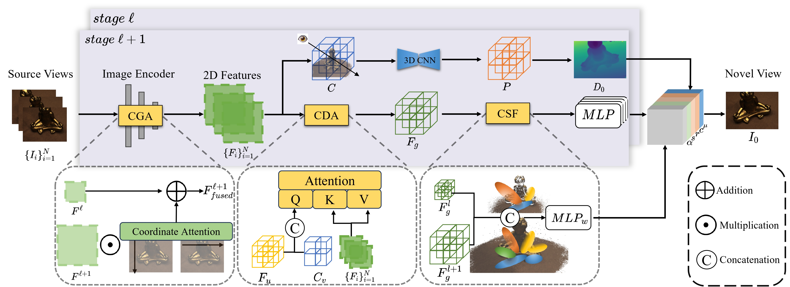
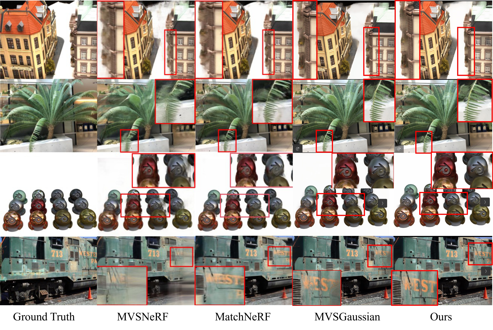
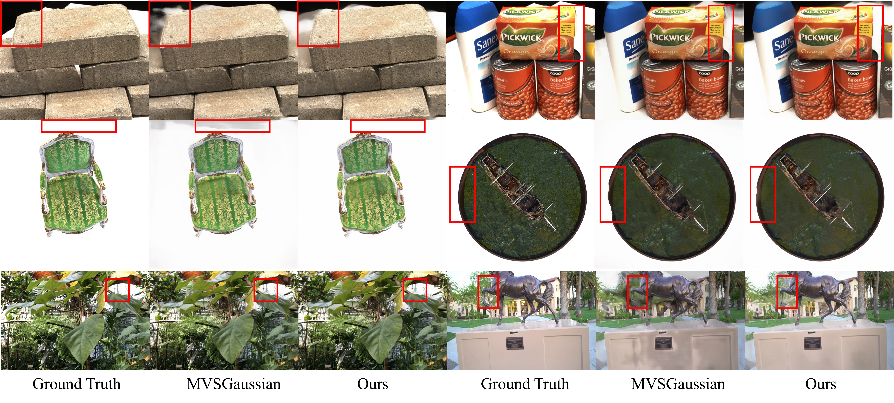
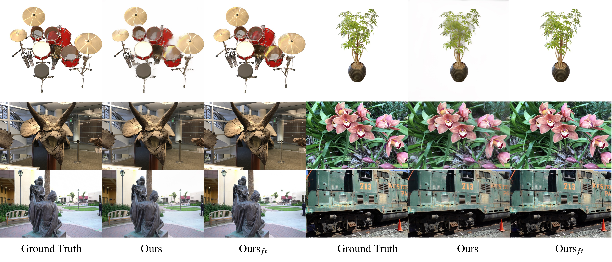
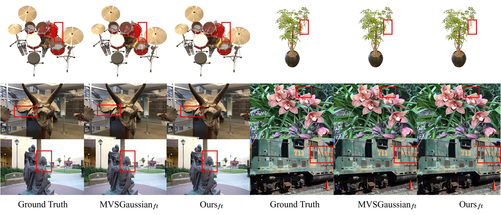

Rendered Results
chair
hotdog
materials
horns
room
fortress
Abstract
Generalizable Gaussian Splatting aims to synthesize novel views for unseen scenes without per-scene optimization. In particular, recent advancements utilize feed-forward networks to predict per-pixel Gaussian parameters, enabling high-quality synthesis from sparse input views. However, existing approaches fall short in encoding discriminative, multi-view consistent features for Gaussian predictions, which struggle to construct accurate geometry with sparse views. To address this, we propose C3-GS, a framework that enhances feature learning by incorporating context-aware, cross-dimension, and cross-scale constraints. Our architecture integrates three lightweight modules into a unified rendering pipeline, improving feature fusion and enabling photorealistic synthesis without requiring additional supervision. Extensive experiments on benchmark datasets validate that C3-GS achieves state-of-the-art rendering quality and generalization ability.
Pipeline

The overall architecture. The proposed method is a coarse-to-fine framework that estimates depths and Gaussian representations from low resolution stage ℓ to high resolution stage ℓ+1. It extracts features from N source images using a feature pyramid network and CGA. These features are warped into the target camera frustum planes to construct the 3D cost volume C. Regularization via 3D CNN yields the probability volume P that is regressed to generate the depth map D0, which serves as the Gaussian centers after unprojection. CDA is designed to enhance the interaction between 2D features from input views and 3D scene information from the cost volume C and the compressed features Fu from 2D features using a U-Net. The enhanced features Fg from CDA are decoded to obtain the other Gaussian parameters, i.e., opacity, color, scale, and rotation, via lightweight MLPs. By fusing the enhanced features from coarse and fine stages, the CSF produces weights for modifying Gaussian opacity. The output Gaussians are used to render the novel view I0.

Qualitative comparison using 3 input views on DTU, Real Forward-facing, NeRF Synthetic, and Tanks and Temples, arranged top to bottom.

Qualitative comparison using 3 input views on DTU, Real Forward-facing, NeRF Synthetic, and Tanks and Temples datasets.

Qualitative comparison of our method under the generalization setting and after per-scene optimization.

Qualitative comparison with baseline methods after per-scene optimization.
Poster
BibTeX
@inproceedings{hu2025c3gs,
title = {{$C^3$-GS: Learning Context-aware, Cross-dimension, Cross-scale Feature for Generalizable Gaussian Splatting}},
author = {Hu, Yuxi and Zhang, Jun and Chen, Kuangyi and Zhang, Zhe and Fraundorfer, Friedrich},
booktitle = {British Machine Vision Conference (BMVC)},
year = {2025}
}